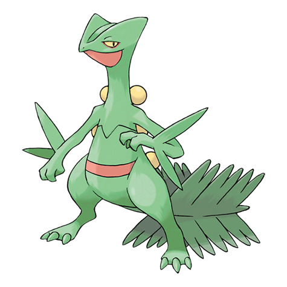

Planta
Sceptile es un Pokémon bípedo de apariencia reptiliana. De su cabeza sobresalen dos crestas triangulares, en su hocico posee un pico similar al de una tortuga. En cada uno de sus brazos posee un par de hojas afiladas que puede usar para ejecutar sus movimientos. En la espalda tiene tres pares de semillas amarillas. Su cola cuenta con un follaje frondoso de hierba.